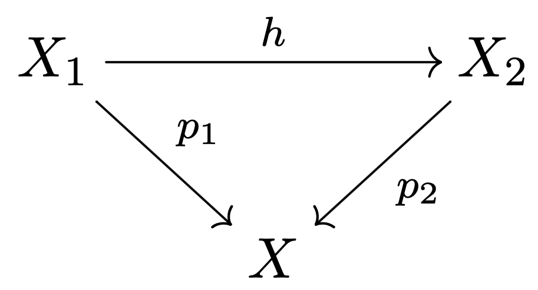

Topology General Exam
August 26, 2017
Name:
Instructions: This is a four hour exam and 'closed book'. There are eight problems. Show your work using methods and results from the first year topology course topics. Results from one part of a problem can be assumed in later parts.
Problem 1
Let
be given by
.
(a) Prove that
is an immersion, but not an embedding.
(b) Find all values of
such that
is transverse to the plane
.
Problem 2
Two covering spaces over and , are said to be isomorphic if there exists a homeomorphism such that the diagram commutes:

Describe the isomorphism classes of covers of the space .
Problem 3
Suppose that
is a regular value of a smooth map
,
and let
.
(a) Will
necessarily have a nowhere vanishing normal vector field?
(b) Will
necessarily have a nowhere vanishing tangent vector field?
(c) Will
necessarily be orientable?
In each part, explain how to construct the vector field or orientation if it must exist, and give a counterexample, if it needn't.
Problem 4
(a) Define what it means for two chain maps between chain complexes
to be chain homotopic. Then prove that if
are chain homotopic, then
.
(b) Call a chain map a quasi-isomorphism if it induces an isomorphism on
homology. Let

be a commutative diagram of chain complexes, such that each horizontal
row is exact. Show that if
and
is a quasi-isomorphism then so is
.
Problem 5
Let be a smooth map between manifolds of dimension and respectively. Let be the ’double point’ subspace:
(a) Say that
is self transverse if for all
.
Show that then
is a smooth manifold of
,
and find its dimension. [Hint: Show that if
is self transverse, then the function
is transverse to the diagonal
.]
(b) Describe, with pictures and/or words, an example of a self
transverse smooth function
for which
is nonempty.
(c) Describe, with pictures and/or words, an example of a smooth
function
that is not self transverse.
Problem 6
(a) Show that there is no continuous map
such that, for all
and
.
[Hint: if such a
exists, explain how it can be used to show that the antipodal map is
homotopic to the identity map on
.
Hmm ...]
(b) Show that every continuous map
has a fixed point. [If
has no fixed point, use covering space theory to show that one can
construct
as in part (a).]
Problem 7
Suppose a finite group
acts freely on the right of a Hausdorff space
.
Let
be the space of
-orbits
- sets of the form
- given the quotient topology.
(a) Show that the quotient map
is a covering space map. [Hint: you need to show that each point
has an open neighborhood
such that all the translates of
the sets
for
- are disjoint.]
(b) How are the groups
and
related?
(c) Show that there exists a smooth 3 -manifold with a fundamental group
that is both finite and non-abelian. [One approach: Recall that
can be viewed as the quaternions of unit length.]
Problem 8
(a)
has a CW complex structure with one 0 -cell and one 2 -cell, and then
the associated ’product’ CW structure on
has one 0-cell, two 2-cells, and one 4-cell. Compute the homology groups
of
.
(b) If
is a smooth connected
-dimensional
manifold, let
denote
with a small open
-ball
removed. Show that
is homotopy equivalent to
.
[Hint: you can assume that the small open 4-ball is removed from the
interior of the 4-cell.]
(c) The connected sum
of two
-manifolds
admits a decomposition
with
diffeomorphic to
.
Compute the homology groups of (
) #(
).